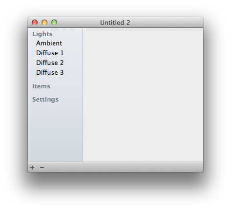

A document in GLLara contains two types of windows: A single document window and arbitarily many render windows..
In the document window, you can change scene settings, add or delete items, set poses or change the models.

The list on the left contains the current selection. You can see the settings for lights and all placed models. In the future, additional settings will be placed here, too. When opening a new window, the items list is empty. You can place characters, objects and scenes.
In the pane on the right you can change the settings of the objects selected on the left.
With the buttons on the bottom you can add models or remove existing ones.
You can open as many render windows as you like. They will all show the same scene from different angles. You can use this for example to open a window showing the entire scene, and use another to closely look at details you‘re working on. The positions and camera angles of the windows are saved in the document and will be restored the next time you open it.
To move the camera, you can use keyboard and mouse or trackpad: Navigating in 3D
With the list on the bottom right you can select camera targets. These are defined by placed items and offer useful positions for the camera. You can rotate around them.
At the bottom right, you also find the render window settings.

Here, you can explicitly choose particular positions and angles. You can also lock the camera position and window sizes so you do not change them by accident.